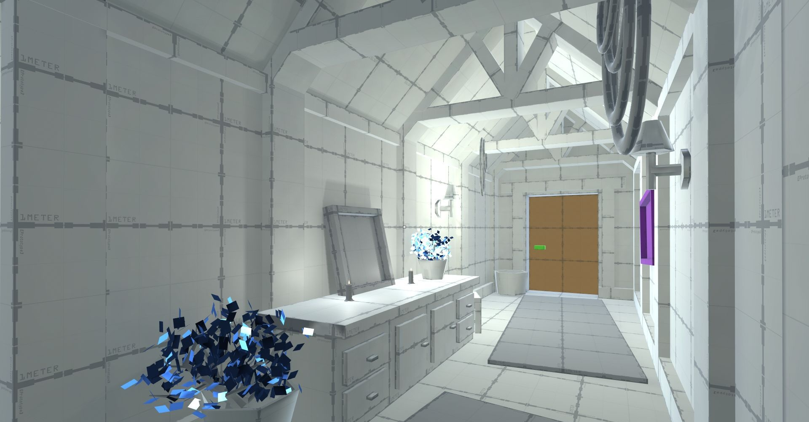
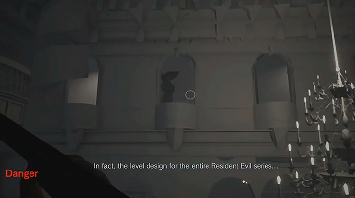
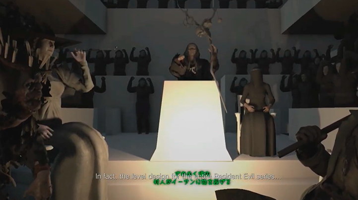
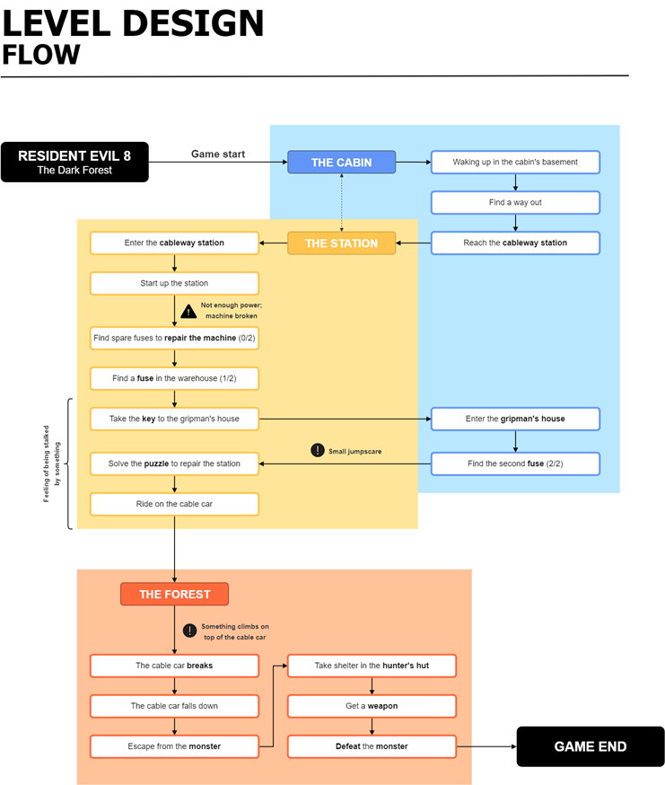
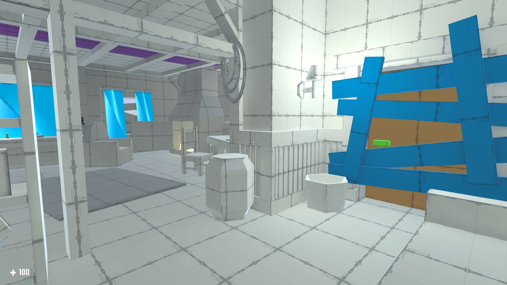
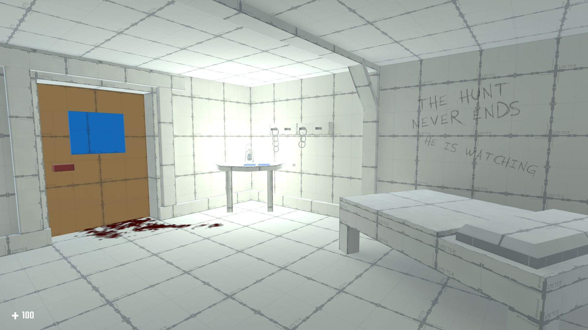
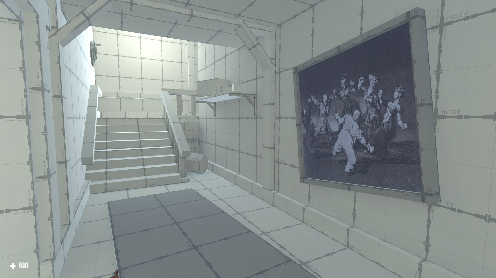
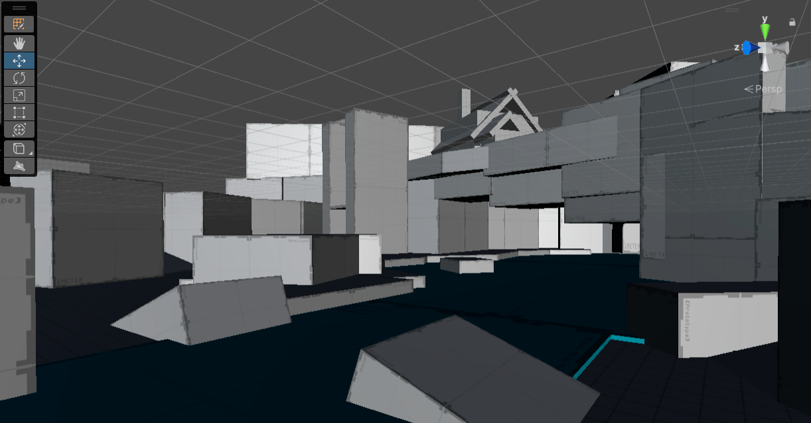

The goal of this project is to challenge my skills by designing a level that evokesfear and unease through spatial composition and form.
Project Background and Motivation
The game industry in Spain is relatively small and, with few exceptions, mostly made up of small to mid-sized studios where developers often hold generalist roles, covering multiple specializations within their discipline.
During my early years, my official job title was “Game Designer,” although I was expected to take on a wide range of responsibilities: from gameplay design to QA (Quality Assurance), including quest/mission design, narrative design and especially level design. I’ve always felt a strong affinity for these three last disciplines. In my view, these areas are deeply interconnected: the shape and purpose of a level are defined by mission design, while the level itself serves as the stage for narrative delivery—whether directly (cutscenes, NPC dialogue) or indirectly, through environmental storytelling that follows the cinematic principle of “show, don’t tell.”
Unfortunately, the technical limitations of the projects I worked on during those early years (typically short development cycles under one year) prevented me from fully testing my skills due to a lack of resources and time to work methodically. That’s why, in my free time, I turned to self-learning and research on level design. There are many excellent free resources available online, such as the fantastic podcast ‘Level Design Lobby’ by Max Pears, which I highly recommend.
I started this project, ‘The Dark Forest’, in 2022 when I felt the need to put everything I’d learned about level design to the test. I believed the levels I had worked on in previous games weren’t enough to showcase my knowledge.
‘The Dark Forest’ is inspired by one of my favorite video games, ‘Resident Evil Village’ (Capcom, 2021). Survival horror is my favorite genre, so this project not only allows me to demonstrate my skills but also gives me the challenge of designing a level that evokes fear as its core emotion.
Unfortunately, I abandoned the project shortly after starting it due to lack of time. But I’ve recently decided to pick it back up, because I truly believe that if I manage to finish it, it will become a portfolio piece I can be genuinely proud of.
This devlog documents my progress in an organized way.
Devlog #1 – Reviewing the Original Blockout (2022)
The first iteration of 'The Dark Forest' was overly ambitious. I aimed to design a level that could plausibly exist within 'Resident Evil Village', which required reverse-engineering its spatial design and pacing. After identifying key gameplay patterns, I developed documentation inspired by the game’s early hours: outdoor exploration mixed with tense interiors, where the absence of enemies (despite clear signs of their lurking presence) creates a constant sense of unease.

Screenshot from the official documentary 'The Level Design, Visual Development, and Visual Production of Resident Evil Village', showing Lady Dimitrescu stalking the player.

Screenshot from the official documentary 'The Level Design, Visual Development, and Visual Production of Resident Evil Village', showing the meeting of the Four Lords with Mother Miranda.
In 'The Dark Forest', the level begins with the player waking in a cabin basement, unaware of how they got there. The goal is to escape while learning basic mechanics like inventory management and puzzle-solving, all within a controlled yet oppressive atmosphere. Through notes and props, the player discovers they’ve been captured by a creature that hunts its victims after psychologically tormenting them. The forest beyond the cabin leads to a cable car station — the only escape route — but reaching it requires surviving ambushes and navigating a deadly detour. Just as the player boards the cable car, the creature attacks, snapping the cables and plunging them into a lower forest zone. This sets the stage for a final boss battle.

Flowchart describing the logical structure and objectives of the level in 'The Dark Forest'.
Before pausing the project in 2022, I completed the first iteration of the level. This phase included the blockout of the starting cabin and the implementation of mechanics inspired by 'Resident Evil Village', such as doors that swing both ways when pushed by the player — a small detail that adds a distinctive feel to the gameplay.
Below are some screenshots of the level in its early state.

The main hall of the abandoned cabin. The exit door is blocked by wooden planks that can only be removed by finding the appropriate tool to pry them loose.

The room where the player wakes up. The ceiling height is lower than standard (3.5 meters) to make the space feel oppressive.

The area is designed so that lines, shapes, and lighting naturally guide the player toward their objective.

The forest and surrounding environment the player must traverse to reach the cable car station are also defined. However, this section is currently in rough blockout and still requires significant work.
Devlog #2 – Revisiting the Design (2025)
This section is currently in development. Updates and progress will be shared soon.